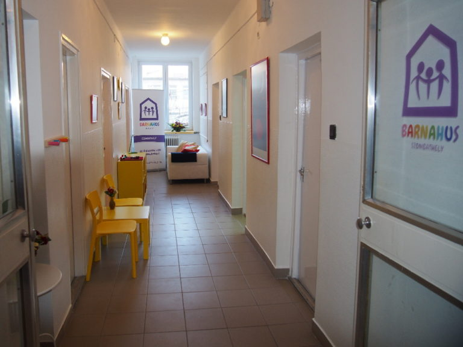

Végre a gyerekek kerültek a törvényhozás fókuszába
Az időben megtörtént örökbeadás az egyetlen, igazi sikerélmény a gyerekvédelemben – egy gyám szavai nyomán a szakellátás dilemmáiról.
TovábbGyermekbarát igazságszolgáltatás
A Barnahus – „gyermekek háza" – biztonságos, barátságos környezetben, egy helyen kínálja a bántalmazott gyermek meghallgatását, orvosi vizsgálatát és terápiáját, hogy ne kelljen újra és újra átélnie a történteket.

Mit jelent, hogy Barnahus?
A bántalmazott gyermeknek a hagyományos úton végig kell járnia a rendőrség, az egészségügy, a gyámügy és a szociális szolgálat állomásait – sokszor többször elmondva, mi történt vele. Ez újra és újra felidézi a traumát.
A Barnahus-modell ezt fordítja meg: a gyermeket lehetőleg csak egyszer hallgatják meg, gyermekbarát környezetben, és a videóra rögzített meghallgatás bizonyító erejű a bíróságon. Minden résztvevő szakember egy helyen, összehangoltan dolgozik.
Ez a Barnahus
Három úton ismerheted meg a modellt, a szombathelyi szolgálatot és a magyar történetet.
Mit jelent a Barnahus, és miért árt a gyermeknek az ismételt kihallgatás? A modell alapelvei.
Elolvasom 02Mit kínál a Barnahus Szombathely, hogyan zajlik a folyamat, és kihez fordulhatsz?
Érdekel 03Hogyan jutott el a modell Izlandról Szombathelyre? Az egyesület, a küldetés és a történet.
VégigböngészemMiért fontos a gyermek beszámolója?
A gyermek biztonságban legyen, ne kerüljön újra az elkövető közelébe.
Megfelelő segítséget kapjon a pszichikai és fizikai felépüléséhez.
A bűntényt felderítsék, és a bíróság ítéletet hozzon.
Az ítélet nyomán az elkövető ne bánthassa újra a gyermeket.
A blogból
Az időben megtörtént örökbeadás az egyetlen, igazi sikerélmény a gyerekvédelemben – egy gyám szavai nyomán a szakellátás dilemmáiról.
TovábbMiért „csendes" bűncselekmény a szexuális abúzus, és hogyan védi a gyermeket az egyablakos, bizonyítékalapú Barnahus-eljárás?
TovábbTámogatás
Kérjük, adója 1%-ával támogassa a Barnahus Egyesületet, hogy továbbra is a gyermekek mindenek felett álló érdekéért dolgozhassunk.
Barnahus Egyesület · adószám
19314150-1-18
Kapcsolat
Ha bizonytalan, vagy tanácsra van szüksége, hívjon minket. Ha bizonyos a bántalmazásban, tegyen feljelentést a lakóhelye szerinti rendőrségen.
Telefon – általános
Telefonos konzultáció